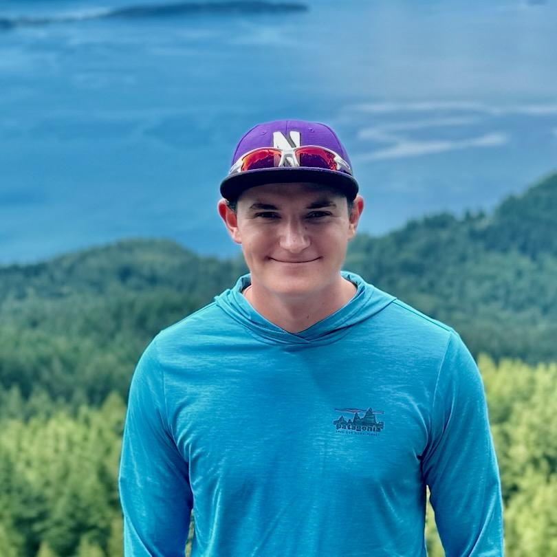

Nicholas Karris
nkarris [at] ucsd [dot] edu

Hello!
I am a fifth year Mathematics PhD student at UC San Diego. My advisor is Alex Cloninger.
Very broadly, my interests center around data science and machine learning.
Most of my current work involves applying (linearized) optimal transport to problems involving measure-valued data, such as particle system simulations, hyperspectral imaging, and diffusion models.
See Research for more detail and a list of papers.
I graduated from Northwestern University in 2021 with a BA in Mathematics and a minor in Computer Science.
I wrote an honors thesis advised by Ezra Getzler.
Here is a copy of my academic CV (last updated 11/2025).
If you'd like a copy of my industry resume, feel free to email me!
I'm looking for a job!
I am currently on the academic job market for postdoctoral (research or teaching) positions beginning in Fall 2026.
Here are the application materials I feel comfortable making public:
Some other relevant materials are included below (e.g., links to papers, poster PDFs, TA evaluations).
If you would like a copy of anything else you can't find here, feel free to send me an email.
Research
My research centers around the mathematics of data science and machine learning, with a recent bend towards problems involving data which is fundamentally measure-valued.
In these situations, many natural questions arise about how one should perform standard data science tasks.
My work answers these questions by viewing the measures themselves as single points and leveraging the tools of optimal transport and the geometry of the Wasserstein manifold to develop intuitive analogs of standard data science techniques for measure-valued data.
By computing optimal transport maps from a fixed reference, we embed each measure into a common linear space (the tangent space of the Wasserstein manifold at the fixed reference), which allows us to apply out-of-the-box methods on the embeddings.
When the data is static, we use these methods to build classifiers, generate new measures from particular classes, and interpolate between measures with geodesics, and when the data is evolving in time, we describe numerical methods for approximating the evolution, finding steady state distributions, and analyzing stability.
Papers
Here are the papers that I have worked on (in reverse-chronological order):
-
N. Karris, L. Durell, J. Flores, T. Emerson. Which Way From B to A: The Role of Embedding Geometry in Image Interpolation for Stable Diffusion. Accepted, TAG–Data Science Conference. Preprint, arXiv:2511.12757 [cs.CV] (2025).
-
J. Lentz, N. Karris, J. Murphy, A. Cloninger. Unbalanced Optimal Transport Dictionary Learning for Unsupervised Hyperspectral Image Clustering. Accepted, 2025 Workshop on Hyperspectral Image and Signal Processing: Evolution in Remote Sensing (WHISPERS) (2025).
-
N. Karris, E.A. Nikitopoulos, I. Kevrekidis, S. Lee, A. Cloninger. Using Linearized Optimal Transport to Predict the Evolution of Stochastic Particle Systems. Preprint, arXiv:2408.01857 [math.NA] (2025).
-
J. Linwu, V. Khurana, N. Karris, A. Cloninger. Linearized Optimal Transport pyLOT Library: A Toolkit for Machine Learning on Point Clouds. Preprint, arXiv:2502.03439 [stat.ML] (2025).
Presentations
Here are the presentations I've done (in roughly reverse-chronological order):
-
Which Way From B to A: The Role of Embedding Geometry in Image Interpolation for Stable Diffusion
-
Using Linearized Optimal Transport to Predict the Evolution of Stochastic Particle Systems
-
Poster Presentation — NSF CompMath Meeting 2025, University of Utah, 9 May 2025
-
Poster Presentation — Statistics and Optimal Transport Workshop, Columbia University, 27 Mar 2025
-
Poster Presentation — Mathematics of Data, Dynamics, and Life Sciences Conference (MDDLS), UC Irvine, 21 Mar 2025
-
Poster Presentation — SIAM Conference on Mathematics of Data Science (MDS24), Atlanta, 22 Oct 2024
-
Poster PDF
-
Linearized Optimal Transport on Particle Systems and Related Applications
-
Candidacy Defense — UC San Diego, 6 Dec 2024
-
Slides
-
Diffusion Models and Optimal Transport
-
Research Talk — DOGSPOT Seminar, UC San Diego, 10 May 2024
-
Time Series on the Wasserstein Manifold
-
Research Talk — DOGSPOT Seminar, UC San Diego, 16 Feb 2024
-
Cliques, Covers, Cycles, and Salesmen: Reducing Hard Problems to Harder Ones
Teaching
Currently as a TA at UCSD:
Fall 2025 — Math 173A : Optimization for Data Science, Lijun Ding
Previously as a TA at UCSD:
- Spring 2025 — Math 180A : Introduction to Probability, Rob Webber (evaluations)
- Winter 2025 — Math 102 : Applied Linear Algebra, Guershon Harel (evaluations)
- Winter 2025 — Math 11 : Introductory Probability and Statistics, Asif Shakeel (evaluations)
- Fall 2024 — Math 173A : Optimization for Data Science, Alex Cloninger (evaluations)
- Fall 2024 — Math 216A : Mathematical Methods of Data Science, Rob Webber *
- Summer 2024 — Math 168 : Random Walks on Graphs, Ioana Dumitriu (evaluations)
- †Spring 2024 — Math 18 : Linear Algebra, Andrew Suk (evaluations)
- †Winter 2024 — Math 18 : Linear Algebra, Brendon Rhoades (evaluations)
- †Fall 2023 — Math 18 : Linear Algebra, Leesa Alzando (evaluations)
- Summer 2023 — Math 10A : Differential Calculus, Adam Bowers (evaluations)
- Summer 2023 — Math 20E : Vector Calculus, Eva Loeser *
- †Spring 2023 — Math 18 : Linear Algebra, Ioana Dumitriu (evaluations)
- †Winter 2023 — Math 20B : Integral Calculus, Dan Rogalski (evaluations)
- †Fall 2022 — Math 20B : Integral Calculus, David Quarfoot (evaluations)
- Summer 2022 — Math 20C : Multivariable Calculus, Amir Mohammadi (evaluations)
- Spring 2022 — Math 10A : Differential Calculus, Muzhi Jin (evaluations)
- Winter 2022 — Math 20B : Integral Calculus, Laura Stevens (evaluations)
- Fall 2021 — Math 20B : Integral Calculus, John Eggers (evaluations)
† Lead TA for large "super lecture" course
* too few student evaluations, no report provided
As a TA at Northwestern:
- Winter 2021 — Math 220-1 : Differential Calculus, Lizzie Burslem
- Fall 2020 — Math 220-2 : Integral Calculus, Aaron Peterson
- Spring 2020 — Math 226-0 : Sequences and Series, Maria Nastasescu
- Winter 2020 — Math 220-2 : Integral Calculus, Eric Chang
- Fall 2019 — Math 228-1 : Multivariable Calculus, Ursula Porod
Other Stuff
I am the current chair of UCSD's Mathematics Graduate Student Council (MGSC) for the academic year 25–26.
I was also chair in AY 24–25, and before that, I was the Vice Chair in AY 23–24, and I served on the Mentorship Committee and Survey Committee in AY 22–23.
I have a Twitter, but I do not tweet often. I mostly use it as my source for sports news and discourse.
I also have a LinkedIn, but I am even less active there.
For all practical purposes, I do not have any other social media.
Okay, I think that's it! I'm not sure what else to put here. If I come up with anything, I'll add it... eventually.
Last updated: 3 Dec 2025